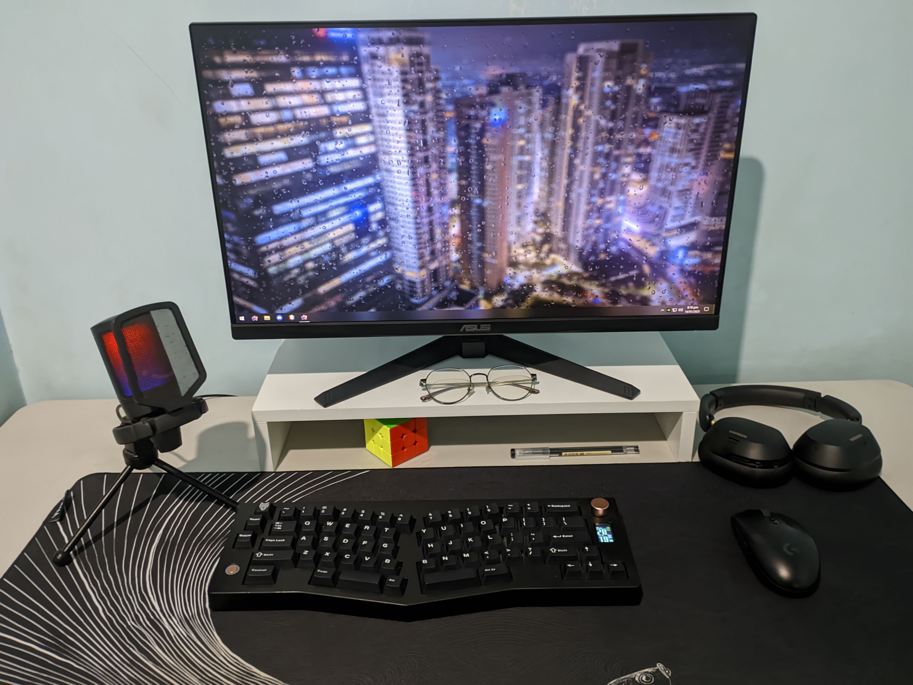
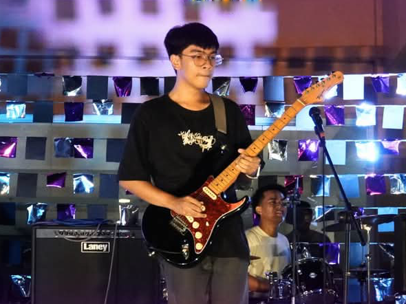

About Me

My Skills in IT
I am an IT enthusiast with skills in troubleshooting, computer systems, networking, and basic programming. I enjoy solving technical problems and continuously learning new technologies to improve my technical abilities. As an information technology student, I am still continuing to hone my skills to provide better and efficient IT solutions. I also create digital graphic arts as a hobby as well as video editing for different use cases. I am proficient in software such as Canva, Adobe PhotoShop, DaVinci Resolve, CapCut, and Adobe Premiere Pro. These are the tools I use most when I create. I am also knowledgeable with other software such as Cisco Packet Tracer and MySQL. I have gained proficiency on using these software through years of experience and experimenting, especially software used to create digital media.
My Passion in Music
I am also a very passionate person when it comes to music. I play the guitar as a hobby and also want to pursue it professionally. I am also part of the Pamantasan ng Lungsod ng Valenzuela Singers, where we perform at various events inside and outside the University. Music is a very important part of my life. I have made songs and different song covers. I create my own content which I upload through my YouTube channel, which I make at my own home using audio editing software like BandLab alongside with DaVinci Resolve. It is my passion to create, and through that passion, I am able to create projects more creatively and motivates me to make more. It could be any project, photo editing, video editing, music, as long as I get to create and express myself through it.
